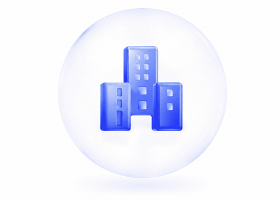
Бизнесу
Сервисам и торговле из Актобе, которым нужны управляемые заявки из интернета.
Консультации для бизнеса Актобе
Удалённый разбор сайта, рекламы и заявок
Для компаний из Актобе анализируем сайт, продвижение, рекламу, аналитику и CRM. Формируем понятную digital-стратегию без лишней теории. Работаем онлайн; офис — в Петропавловске.

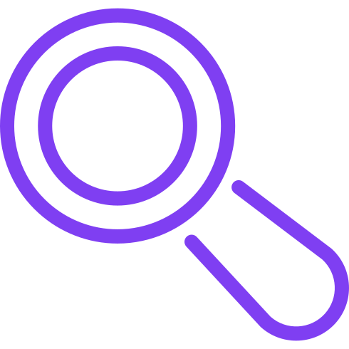
комплексный анализ digital-системы;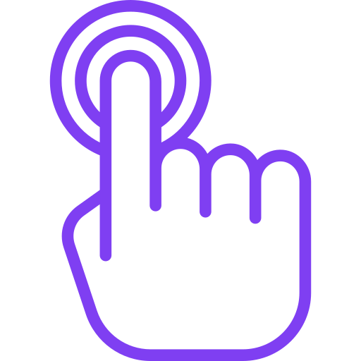
рекомендации с приоритетами;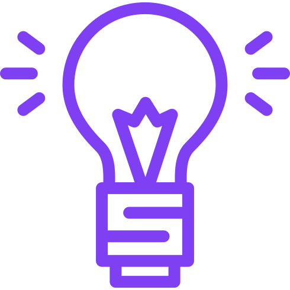
понятный план внедрения;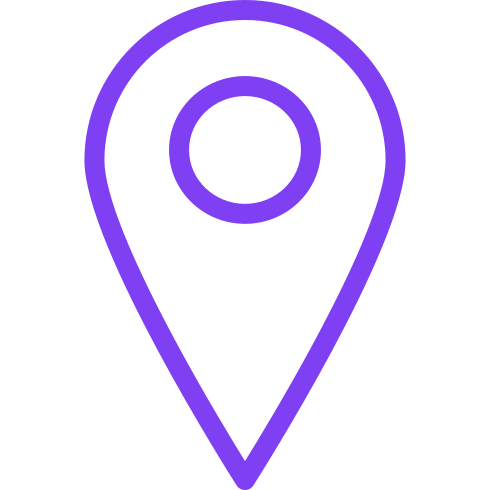
работа по всему Казахстану.
Сервисам и торговле из Актобе, которым нужны управляемые заявки из интернета.
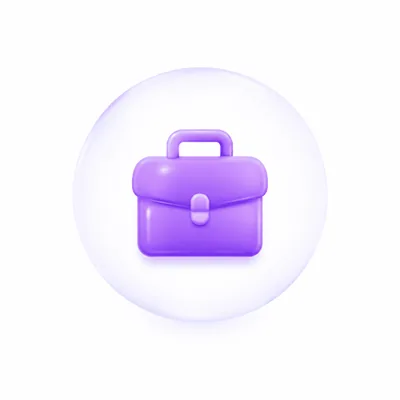
Онлайн-каналам продаж — усилим конверсию и прозрачность бюджета.
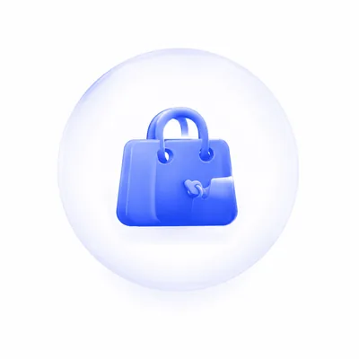
Компаниям с отделом продаж — свяжем маркетинг и обработку лидов.
Запускам: поможем выбрать стартовые шаги в digital.
Маркетологам — дадим экспертную оценку каналов.
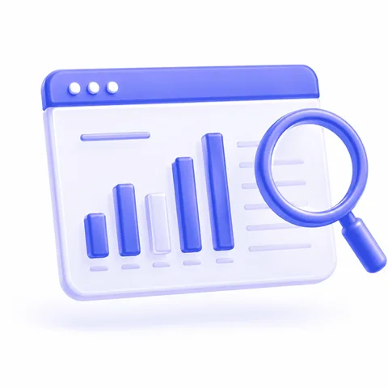
Аудит сайта и каналов под задачи бизнеса в Актобе.
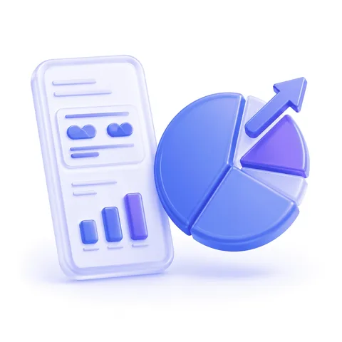
Оценка продвижения и качества трафика.
Стратегия роста с приоритетами и KPI.
Аналитика и данные для решений.
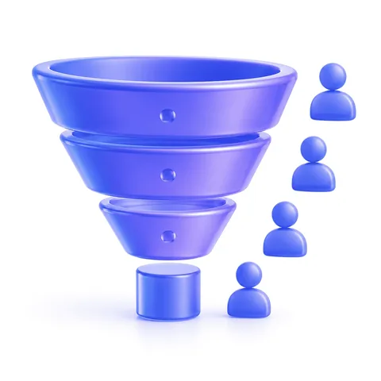
CRM и воронка продаж.
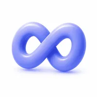
Знакомимся с бизнесом и целями в Актобе.
Проводим аудит digital-контура.
Готовим рекомендации с приоритетами.
Помогаем внедрить изменения.
Сверяем результаты и масштабируем удачные шаги.
B2B-услуги
Провели digital-аудит, обновили структуру и запустили SEO + рекламу.
Интернет-магазин
Навели порядок в рекламе и улучшили конверсию сайта.
Производство
Собрали семантику, обновили контент и улучшили техническую часть.
Да. Работу с компанией из выбранного города можно провести дистанционно: материалы, доступы, интервью и разбор результатов передаются онлайн. Это позволяет начать без выезда и согласовать объём исследования под ваш график.
Digital-консалтинг показывает, где сайт, реклама, SEO, аналитика и обработка заявок теряют обращения и бюджет. Каналы рассматриваются вместе, поэтому видно, какое изменение сильнее влияет на результат. Компания получает приоритеты вместо разрозненных советов по отдельным инструментам.
В услугу входит разбор цифровых каналов под вашу задачу: сайт, поисковое продвижение, реклама, аналитика, CRM и путь заявки. Объём можно сузить до одного блока или провести комплексную диагностику. По итогам вы получаете согласованный список работ, а не общий обзор рынка.
Да. Проверяем, как сайт принимает трафик, как он виден в поиске и как работают рекламные кампании. Смотрим посадочные страницы, формы, качество объявлений и связку каналов между собой. Это помогает понять, мешает ли рост сам сайт или настройки продвижения.
Да. Разбираем, как фиксируются визиты и заявки, хватает ли данных в CRM и где обращения «зависают» до реакции менеджера. Проверяем путь от формы или рекламы до продажи, а не только клики и показы. Так маркетинг связывается с реальной обработкой обращений.
Компания получает письменный документ с выводами, рекомендациями, приоритетами и следующими шагами. В нём видно, что исправлять сразу, а что можно отложить. Документ удобно использовать как дорожную карту для своей команды или для последующего внедрения.
Стратегия собирается после разбора данных, а не из шаблона: цели, каналы, очередь работ и показатели контроля. Сначала закрываем узкие места, которые сильнее влияют на заявки и бюджет. Так команде проще согласовать порядок внедрения и не распылять ресурсы.
Для старта достаточно адреса сайта и краткого описания задачи. Доступы к аналитике, рекламным кабинетам или CRM понадобятся, если выбран углублённый разбор. Чем яснее сформулирована цель, тем точнее можно согласовать объём исследования.
Да. После аудита можно перейти к внедрению выбранных изменений: сайт, SEO, реклама, CRM, аналитика и связанные процессы. Доступны проектный формат и сопровождение по согласованным задачам. Объём внедрения обсуждаем отдельно после утверждения приоритетов.
Продолжительность зависит от количества рекламных каналов, сайтов, систем аналитики, CRM и глубины исследования. Фиксированный срок заранее не назначаем: его согласовываем после первичного знакомства с задачей. Так вы понимаете объём работы до начала полного разбора.
Оставьте заявку — предложим формат аудита или консультации.
Разберём каналы и зафиксируем план следующих шагов.
Получить консультацию по Digital-консалтингу
Оставьте заявку — и мы с вами свяжемся